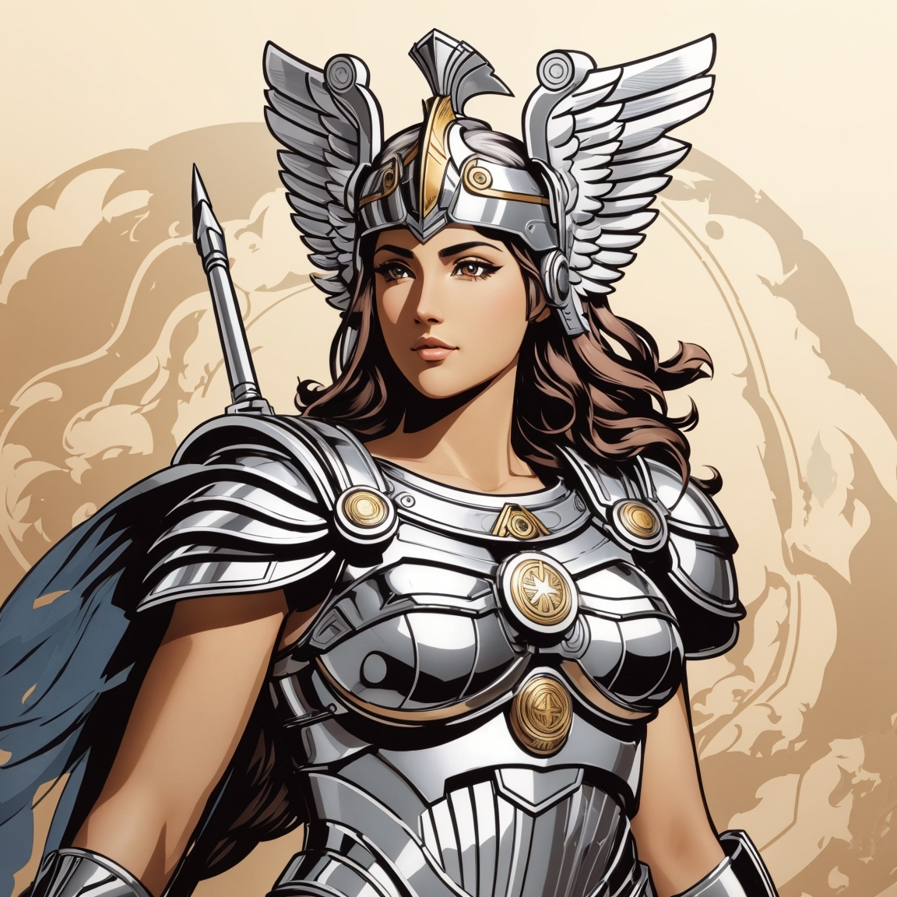
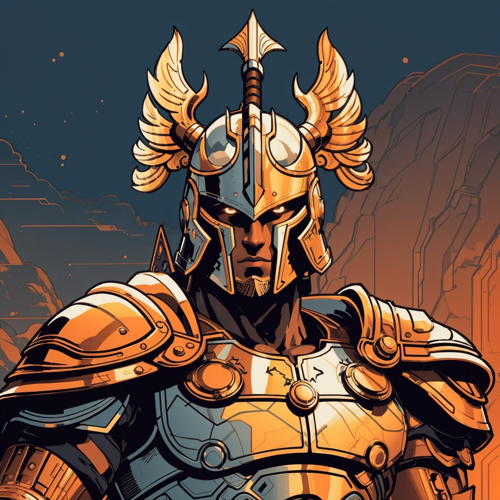

Athena
A deusa Athena é conhecida como a deusa da sabedoria e da estratégia de guerra. Seu símbolo é a coruja, e ela costuma exibir um temperamento controlado, focando na parte tática dos combates.
Apesar de normalmente associada à temperança, ela pode exibir comportamentos bastante hostis, vide as histórias de Aracne e Medusa, vítimas de sua fúria divina.
Ares
O deus Ares é conhecido como o deus da guerra e do combate. Seu símbolo é o javali, e ele costuma exibir um temperamento brutal, focando na parte física dos combates.
Apesar de normalmente associado à violência gratuita, ele pode exibir comportamentos protetores, de modo que é considerado o protetor das mulheres maltratadas, ou simplesmente das mulheres.
